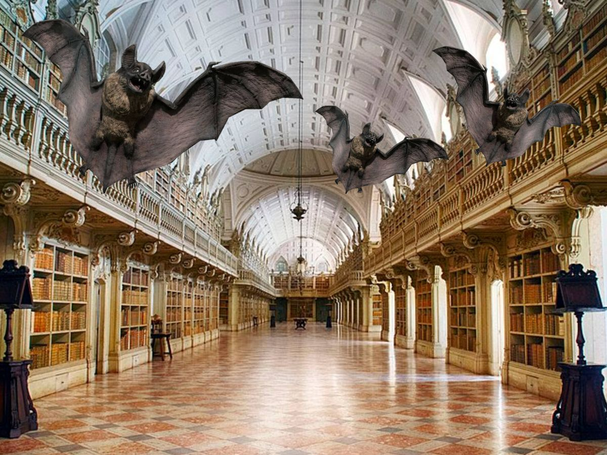

landmarks
El monasterio fue mandado construir por el rey Manuel I para conmemorar el viaje de Vasco da Gama a la India y el poder marítimo de Portugal durante la Era de los Descubrimientos. Se financió en gran parte con los beneficios del comercio de especias.
Fue entregado a la Orden de los Jerónimos, cuyos monjes rezaban por los navegantes portugueses.

Biblioteca Joanina:
La Biblioteca Joanina, situada en la Universidad de Coímbra (Portugal), fue construida entre 1717 y 1728 por orden del rey Juan V y es uno de los ejemplos más destacados del estilo barroco en Europa. Alberga unos 60.000 libros antiguos de los siglos XVI, XVII y XVIII, principalmente sobre derecho, teología, filosofía y medicina. Su interior está ricamente decorado con maderas exóticas, dorados y frescos, y se organiza en tres grandes salas. La biblioteca tiene una gran importancia cultural e histórica, ya que simboliza el valor del conocimiento y el poder cultural de Portugal en el siglo XVIII. Un dato curioso es que en su interior viven murciélagos que ayudan a conservar los libros al eliminar los insectos que podrían dañarlos.
Palacio Nacional da Pena:
El Palacio Nacional da Pena, situado en Sintra (Portugal), fue construido en el siglo XIX por orden del rey Fernando II sobre las ruinas de un antiguo monasterio. Es uno de los mejores ejemplos del romanticismo en Europa y destaca por su arquitectura colorida y fantasiosa, que combina estilos neogótico, neomanuelino, neorrenacentista e influencias islámicas. Rodeado por el Parque da Pena y ubicado en lo alto de la sierra de Sintra, el palacio ofrece vistas espectaculares y forma parte del Paisaje Cultural de Sintra, declarado Patrimonio de la Humanidad por la UNESCO.
Palacio de la Bolsa:
El Palacio de la Bolsa, situado en Oporto, fue construido a partir de 1842 por la Asociación Comercial de la ciudad para representar su poder económico y comercial en el siglo XIX. De estilo neoclásico, destaca por sus interiores ricamente decorados, especialmente el famoso Salón Árabe, inspirado en la Alhambra. Entre sus espacios principales se encuentra también el Patio de las Naciones, con una cúpula de vidrio y escudos de países con los que Portugal mantenía relaciones comerciales. El edificio forma parte del centro histórico de Oporto, declarado Patrimonio de la Humanidad por la UNESCO.